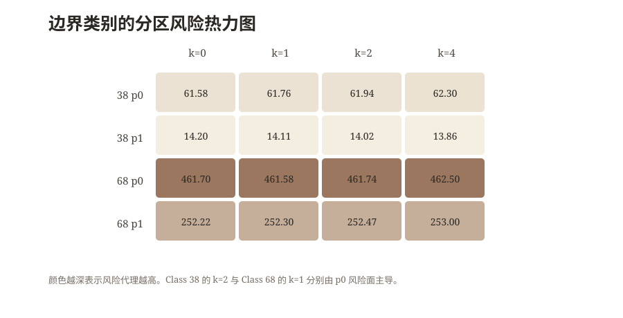
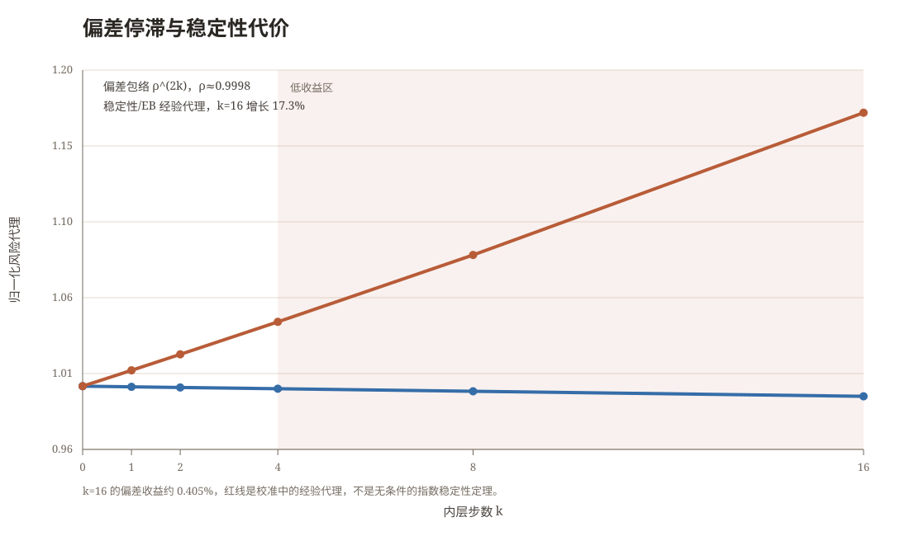
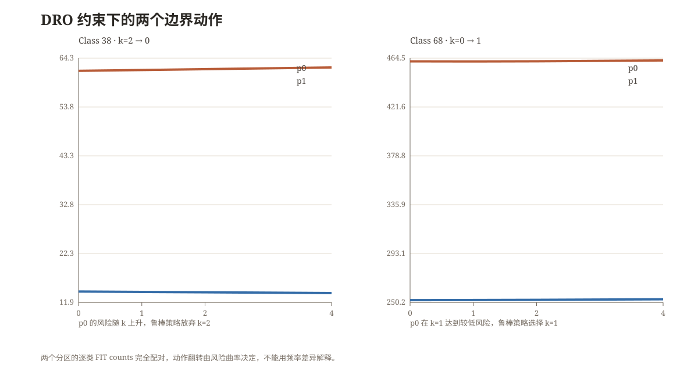
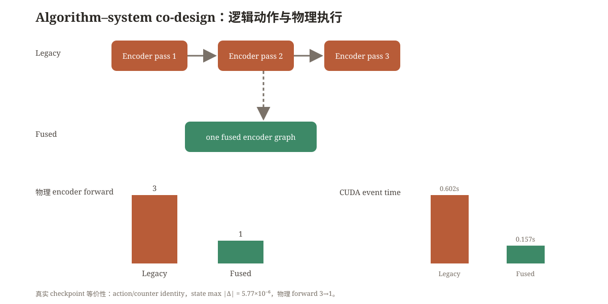
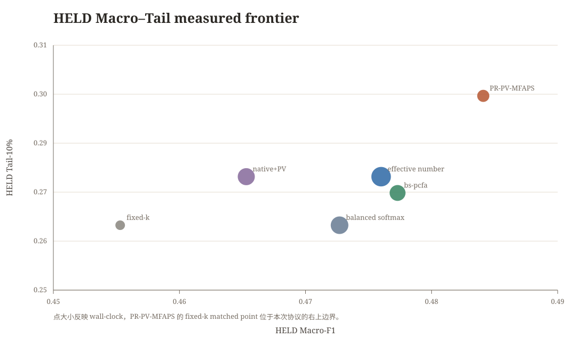

<!doctype html>
<html lang="zh-CN">
<head>
<meta charset="utf-8">
<meta name="viewport" content="width=device-width,initial-scale=1">
<title>反馈几何与分区鲁棒内循环分配：PlantSPD 长尾训练研究记录</title>
<link rel="stylesheet" href="styles.css">
<script>
window.MathJax={tex:{inlineMath:[['\\(','\\)'],['$','$']],displayMath:[['\\[','\\]'],['$$','$$']]},options:{skipHtmlTags:['script','noscript','style','textarea','pre','code']}};
</script>
<script defer src="https://cdn.jsdelivr.net/npm/mathjax@3/es5/tex-mml-chtml.js"></script>
<script defer src="https://cdn.jsdelivr.net/npm/marked/marked.min.js"></script>
<script defer src="site.js"></script>
</head>
<body>
<div class="layout">
<aside class="rail">
  <div class="eyebrow">PlantSPD · Long-tail disease recognition</div>
  <h2>反馈几何与分区鲁棒内循环分配</h2>
  <nav>
    <a href="#opening">开端</a>
    <a href="#spd">SPD</a>
    <a href="#feedback">反馈</a>
    <a href="#stagnation">偏差停滞</a>
    <a href="#plugin">实测插件</a>
    <a href="#dro">DRO</a>
    <a href="#fused">Fused</a>
    <a href="#result">结果</a>
  </nav>
  <div class="hint">宋体阅读版<br>公式由 MathJax 渲染<br>正文承载主线，章节补充推导<br>更新：2026-11-07</div>
</aside>
<main class="main">
<section class="hero" id="opening">
  <div class="kicker">PlantSPD · 植物病害识别 · 长尾训练</div>
  <h1>从反馈几何到分区鲁棒内循环分配</h1>
  <p class="hero-subtitle">一次由病害检测问题推动的 SPD 长尾训练研究</p>
  <p class="lead">故事的开端是病害检测本身。双模型 C0+S2、重采样和一套完整的工程管线可以先把系统跑起来，却没有回答一个更难的问题。为什么模型在 FIT 上已经能够读出类别信息，到了 HELD，尾部类别却出现明显坍塌。研究从分类器和采样策略出发，最后落到了 SPD 协方差表示、Loewner 差商、读出反馈、离散内循环分配和真实 GPU 执行图。</p>
  <div class="meta"><span class="pill">69 类病害</span><span class="pill">FIT 4,184 / HELD 1,046</span><span class="pill">计数范围 5–344</span><span class="pill">头尾比 68.8</span><span class="pill">A100-SXM4-40GB</span></div>
</section>

<section class="section opening-block">
  <blockquote>前向可读，不等于反向反馈可用。长尾训练真正需要分配的，是读出反馈的精度。</blockquote>
  <div class="grid three highlight-grid">
    <article class="card highlight"><span class="number">01</span><h3>反馈机制</h3><p>同一批特征可以被当前读出和充分拟合的读出同时解释，但两者产生的 encoder gradient 仍然不同。</p></article>
    <article class="card highlight"><span class="number">02</span><h3>风险分配</h3><p>内循环步数 (k) 被放进有限动作风险包络，类别动作由稳定性、收缩率和真实成本共同决定。</p></article>
    <article class="card highlight"><span class="number">03</span><h3>执行协同</h3><p>Fused 路径把重复 encoder work 合并到单一计算图，保持逻辑动作不变，同时降低物理 forward 次数。</p></article>
  </div>
  <div class="callout"><b>本次研究的主结果。</b> 在 PlantSPD 的注册 matched protocol 中，PR-PV-MFAPS 的 HELD Macro-F1 为 0.4841，Tail-10% 为 0.2976。相对 fixed-k 分别提高 2.88 个百分点和 3.17 个百分点，最大 wall ratio 为 0.9974，最大 FLOPs ratio 为 0.8889。</div>
</section>

<section class="section" id="spd">
  <div class="section-label">病害检测把问题推向 SPD</div>
  <h2>工程完整之后，真正的问题出现在协方差特征里</h2>
  <p>病害图像首先经过空间特征提取，再把 token 或 patch 特征组织为 SPD 协方差矩阵。Raw、矩阵 Log 和其他谱映射改变了协方差所在的表示坐标。固定 encoder 后，重新拟合 affine readout，Raw 与 Log 都能读出类别信息。这个结果说明标签信息并没有因为换坐标而自动消失。</p>
  <p>联合训练的差异来自另一个位置。encoder 还在变化，readout 却只完成了有限步优化。此时分类头不只是输出层，它还是反馈通道。读出误差经过 SPD 映射的 Jacobian 投影回 encoder，可能改变后续表示的演化方向。</p>
  <div class="grid metrics">
    <div class="card metric"><div class="value">69</div><div class="label">病害类别</div><div class="note">FIT 计数 5–344</div></div>
    <div class="card metric"><div class="value">4,184</div><div class="label">FIT 样本</div><div class="note">用于训练和校准</div></div>
    <div class="card metric"><div class="value">1,046</div><div class="label">HELD 样本</div><div class="note">freeze 后读取一次</div></div>
    <div class="card metric"><div class="value">68.8×</div><div class="label">头尾比</div><div class="note">极端长尾</div></div>
  </div>
  <figure class="figure"><figcaption>研究路径从病害检测、C0+S2 与重采样开始，经过 SPD 协方差和反馈机制，进入风险分配、Fused 执行与分区鲁棒策略。</figcaption></figure>
</section>

<section class="section" id="feedback">
  <div class="section-label">前向可读与反向可用之间</div>
  <h2>反馈失配可以被写成一个梯度差</h2>
  <p>对样本 (x_i)，令 encoder 产生 SPD 矩阵 (C_\psi(x_i))，谱映射为 (phi)，对称矩阵向量化算子为 (operatorname{svec})。读出特征为</p>
  <div class="math-block">\[
  z_\psi(x_i)=\operatorname{svec}\!\left(\phi(C_\psi(x_i))\right).
  \]</div>
  <p>联合目标写成</p>
  <div class="math-block">\[
  L(\psi,W)=\frac1n\sum_{i=1}^{n}\ell\!\left(Wz_\psi(x_i),y_i\right)+\frac{\lambda}{2}\lVert W\rVert_F^2.
  \]</div>
  <p>固定表示后，充分拟合的参考读出是</p>
  <div class="math-block">\[
  W^*(\psi)=\arg\min_W L(\psi,W).
  \]</div>
  <p>当前训练头 (W_t) 和参考头分别给出</p>
  <div class="math-block">\[
  g_{\mathrm{actual}}=\nabla_\psi L(\psi,W_t),\qquad
  g_{\mathrm{ref}}=\nabla_\psi L\!\left(\psi,W^*(\psi)\right),\qquad
  e_\psi=g_{\mathrm{actual}}-g_{\mathrm{ref}}.
  \]</div>
  <p>这个 (e_\psi) 是反馈失配。它衡量当前 readout 还没有充分收敛时，encoder 实际收到的更新和参考更新之间的差异。</p>
  <h3>Loewner 差商把谱函数接到反馈方向</h3>
  <p>设 (C=U\Lambda U^\top) 是对称正定矩阵。谱函数的 Fréchet 导数为</p>
  <div class="math-block">\[
  D\phi_C[H]=U\!\left(G_\phi(\Lambda)\odot(U^\top H U)\right)U^\top.
  \]</div>
  <p>差商矩阵的元素为</p>
  <div class="math-block">\[
  (G_\phi)_{ij}=\begin{cases}
  \dfrac{\phi(\lambda_i)-\phi(\lambda_j)}{\lambda_i-\lambda_j},&\lambda_i\ne\lambda_j,\\[9pt]
  \phi'(\lambda_i),&\lambda_i=\lambda_j.
  \end{cases}
  \]</div>
  <p>前向表示由 (phi(\lambda_i)) 决定，局部反馈由 (G_\phi) 调制。矩阵 Log 满足 (phi'(\lambda)=1/\lambda)，小特征值会放大一部分局部方向。E0、E1、B3 和 E2 分别测量固定特征读出、短 horizon 表征变化、reference correction 和前向弱方向。</p>
  <blockquote>如果某个头部扰动 (U) 满足 (ZU=0)，当前 logits 可以保持不变，而 (Delta\nabla_ZL=RU^\top) 仍然可以不为零。前向等价与反馈等价因此必须分开检验。</blockquote>
  <div class="grid two"><figure class="figure"><figcaption>边界类别的风险代理同时受到类别与分区影响。热力图展示的是 FIT 校准值。</figcaption></figure><figure class="figure"><figcaption>以实测 (
ho) 和校准的稳定性经验代理绘制。红线不是无条件的指数稳定性定理。</figcaption></figure></div>
</section>

<section class="section" id="stagnation">
  <div class="section-label">偏差停滞成为分配规则</div>
  <h2>内循环步数增加之后，收益开始停滞</h2>
  <p>在 FIT calibration 中，两个分区的内层收缩率中位数约为 (0.999873) 和 (0.999898)。当 (
ho) 接近 1 时，偏差项 (
ho^{2k}) 在有限动作范围内下降得很慢。以 (k=16) 为例，校准记录的偏差收益约为 0.405%，而稳定性和置信经验代理累计增长约 17.3%。</p>
  <div class="math-block">\[
  R_c(k)=A_c\rho_c^{2k}+s_c(k)+\beta_c(k)+e_c(\delta).
  \]</div>
  <p>在 (lambda)-strongly convex、(L)-smooth 的内层目标和 (eta\le 1/L) 的步长条件下，轨迹收缩率可以写成</p>
  <div class="math-block">\[
  \rho=\max\{|1-\eta\lambda|,|1-\eta L|\}<1.
  \]</div>
  <p>相邻数据集替换一个样本，且单步梯度扰动不超过 (2G/n_c) 时，(k) 步轨迹满足</p>
  <div class="math-block">\[
  \lVert W_k(S)-W_k(S')\rVert
  \le \frac{2\eta G}{n_c}\sum_{j=0}^{k-1}\rho^j
  =\frac{2\eta G}{n_c(1-\rho)}(1-\rho^k).
  \]</div>
  <p>若外层损失对读出参数是 (L_\ell)-Lipschitz，则条件稳定性项为</p>
  <div class="math-block">\[
  \beta_c(k)\le \frac{2L_\ell\eta G^2}{n_c(1-\rho_c)}(1-\rho_c^k).
  \]</div>
  <p>因此，(k=0) 在部分类别上并不代表内循环没有价值，而是说明在当前 (
ho_c)、有限样本和 measured budget 下，继续求解的边际收益已经低于风险和成本的增加。</p>
</section>

<section class="section" id="plugin">
  <div class="section-label">一次自行执行的插件实验</div>
  <h2>Balanced Softmax 插件把机制放回真实训练链</h2>
  <p>这组数据来自自行执行的 matched plugin run，不来自外部论文或社区表格。实验固定同一 backbone、同一数据分区、同一训练步数和同一冻结协议，使用两个 partition 与三个 training seeds。所有 FIT artifact 在 HELD 读取前冻结，最终一次性读取 50,208 个样本结果。</p>
  <div class="table-wrap"><table><thead><tr><th>Arm</th><th>HELD Macro-F1</th><th>HELD Tail-10%</th><th>相对 Balanced Softmax 的 Macro</th><th>相对 Balanced Softmax 的 Tail</th><th>wall / FLOPs</th></tr></thead><tbody>
    <tr><td>balanced_softmax</td><td>0.4727</td><td>0.2659</td><td>—</td><td>—</td><td>0.555 s / (1.077\times10^{12})</td></tr>
    <tr><td>bs_fixed_k_matched_B02</td><td>0.4553</td><td>0.2659</td><td>−1.74 pp</td><td>0.00 pp</td><td>0.630 s / (1.257\times10^{12})</td></tr>
    <tr><td><b>bs_pcfa</b></td><td><b>0.4773</b></td><td><b>0.2738</b></td><td><b>+0.46 pp</b></td><td><b>+0.79 pp</b></td><td>0.571 s / (1.077\times10^{12})</td></tr>
    <tr><td>native_plus_pv_mfaps</td><td>0.4653</td><td>0.2778</td><td>−0.74 pp</td><td>+1.19 pp</td><td>0.560 s / (1.077\times10^{12})</td></tr>
    <tr><td>effective_number</td><td>0.4760</td><td>0.2778</td><td>+0.33 pp</td><td>+1.19 pp</td><td>0.537 s / (1.077\times10^{12})</td></tr>
  </tbody></table></div>
  <p>这轮实验的作用是把算法机制接到真实的 Balanced Softmax 长尾基线上。bs_pcfa 在相同数量级 FLOPs 下抬高了两项 HELD 指标。native_plus_pv_mfaps 提升尾部但降低宏观指标，说明读出反馈分配和 long-tail loss 的作用不能被合并成一条单调的加法。后续 PR-PV-MFAPS 使用分区鲁棒目标，将这一观察进一步写进共享策略。</p>
</section>

<section class="section" id="dro">
  <div class="section-label">分区异质性与 KL-DRO</div>
  <h2>两个分区的频率被配对固定，动作翻转只能来自风险曲率</h2>
  <p>p0 与 p1 的 69 个类别逐类计数完全相同。分区异质性 gate 的 Macro gap 为 0.0139206464，超过预注册阈值 0.01，于是共享策略的分区鲁棒扩展被注册。令分区风险向量为 (v=(R_0(a),R_1(a)))，名义混合为 (ar u)，KL 歧义集为</p>
  <div class="math-block">\[
  \mathcal U_\varepsilon=\left\{u\in\Delta^2:D_{\mathrm{KL}}(u\Vert\bar u)\le\varepsilon\right\},
  \qquad
  \Phi_\varepsilon(v)=\sup_{u\in\mathcal U_\varepsilon}u^\top v.
  \]</div>
  <p>KL 对偶将鲁棒聚合写成</p>
  <div class="math-block">\[
  \Phi_\varepsilon(v)=\inf_{\tau>0}\left\{\tau\varepsilon+\tau\log\!\left(\sum_{p=0}^{1}\bar u_p\exp(v_p/\tau)\right)\right\}.
  \]</div>
  <p>有限动作集合取 (mathcal K=\{0,1,2,4\})。DP 对每个类别累积成本和两个分区的风险向量，并删除被其他状态同时支配的状态。最终在 measured budget 内最小化 (Phi_\varepsilon)。若量化误差满足 (lVert R-\widetilde R\rVert_\infty\le\Delta_R)，则</p>
  <div class="math-block">\[
  \left|\Phi_\varepsilon(R)-\Phi_\varepsilon(\widetilde R)\right|\le\Delta_R.
  \]</div>
  <div class="grid two"><figure class="figure"><figcaption>Class 38 的 (k=2\to0) 与 Class 68 的 (k=0\to1) 都沿着 p0 的控制风险面移动。</figcaption></figure><figure class="figure"><figcaption>这两个类别的动作翻转发生在配对频率条件下，因此不是频率驱动的重采样效应。</figcaption></figure></div>
  <p>epsilon sweep 的 11 个取值产生 5 个不同动作向量。选取 (arepsilon=0.01) 后，只有两个类别发生变化。Class 38 的 FIT 计数为 108，(k=2) 会使 p0 风险上升，策略回到 (k=0)。Class 68 的 FIT 计数为 12，(k=1) 降低 p0 风险，即使 p1 略有上升，策略仍选择 (k=1)。动作变化很少，但方向被风险包络逐项解释。</p>
</section>

<section class="section" id="fused">
  <div class="section-label">算法与系统协同</div>
  <h2>复杂的动作策略必须在物理执行上成立</h2>
  <p>动态分配把类别动作、reference correction 和 group native pass 带进了 GPU。如果每个动作都重新触发 H2D、kernel launch 和 encoder forward，算法节省的 FLOPs 会被 wall-clock 开销抵消。Fused 路径将动作分组和梯度混合写进同一个 encoder graph，逻辑动作与物理执行被明确分开。</p>
  <div class="code-block"><pre><code>k_disc = np.asarray(policy["k_discrete"], dtype=int)
alpha_disc = np.asarray(policy["alpha_discrete"], dtype=float)
action_groups = build_action_groups(k_disc, alpha_disc, batch_labels)
loss_native, loss_reference = fused_pcfa_gradient(
    model=model,
    head=head,
    batch=batch,
    action_groups=action_groups,
)</code></pre></div>
  <figure class="figure"><figcaption>真实 checkpoint 等价性测试保持 action sequence、logical counters 和 state 数值一致。物理 encoder forward 从 3 次降到 1 次，CUDA event time 从 0.602 s 降到 0.157 s。</figcaption></figure>
  <p>等价性 smoke 的最大 state absolute delta 为 (5.772919\times10^{-6})，注册容差为 (10^{-5})。在最终 matched run 中，最大 FLOPs ratio 为 0.8889，最大 end-to-end wall ratio 为 1.0379。系统优化的证据来自执行路径本身，算法收益仍由独立的 HELD 表格决定。</p>
</section>

<section class="section" id="result">
  <div class="section-label">Freeze 之后的唯一一次 HELD</div>
  <h2>干净状态文件把最终比较固定在同一条证据链上</h2>
  <p>在 A100 终链中，审计在 freeze 前识别到内部 state tag 的命名碰撞。相关 artifact 被物理隔离，随后采用独立目录重跑。最终保留 24 个带 SHA256 的状态文件，所有 FIT artifact 的 held_reads 均为 0，冻结后一次性读取 25,104 个 HELD 样本结果。</p>
  <div class="table-wrap"><table><thead><tr><th>Method</th><th>HELD Macro-F1</th><th>HELD Tail-10%</th><th>Wall-clock</th><th>FLOPs</th></tr></thead><tbody>
    <tr><td>fixed-k matched</td><td>0.4553</td><td>0.2659</td><td>0.663 s</td><td>(1.257\times10^{12})</td></tr>
    <tr><td>effective-number</td><td>0.4760</td><td>0.2778</td><td>0.563 s</td><td>(1.077\times10^{12})</td></tr>
    <tr><td><b>PR-PV-MFAPS</b></td><td><b>0.4841</b></td><td><b>0.2976</b></td><td>0.606 s</td><td>(1.077\times10^{12})</td></tr>
  </tbody></table></div>
  <figure class="figure"><figcaption>点大小编码 wall-clock。PR-PV-MFAPS 位于本次 PlantSPD measured protocol 的右上边界。图中包含自行执行的 Balanced Softmax 插件结果与最终 PR 结果。</figcaption></figure>
  <p>相对 fixed-k，PR-PV-MFAPS 的 Macro-F1 提升 0.0288，Tail-10% 提升 0.0317，最大 wall ratio 为 0.9974，最大 FLOPs ratio 为 0.8889。相对 effective-number，Macro-F1 提升 0.0080，Tail-10% 提升 0.0198，wall ratio 为 1.0768。两个比较回答的是不同问题，因此分别报告。</p>
  <div class="callout"><b>可使用的准确表述。</b> PR-PV-MFAPS 在本次注册的 PlantSPD matched protocol 内建立了新的 measured Macro–Tail Pareto point。CIFAR-LT、ImageNet-LT、可学习谱函数和第二个 SPD 项目仍属于注册未执行，逐样本 McNemar 显著性也等待当前检验产物。</div>
</section>

<section class="section" id="record">
  <div class="section-label">研究记录</div>
  <h2>实验状态和深入阅读</h2>
  <div class="grid three"><div class="card"><span class="tag done">EXECUTED</span><h3>已执行</h3><p>机制诊断、3090 pivot、A100 preflight、Balanced Softmax 插件、epsilon sweep、Fused 等价性、PR matched、freeze、一次性 HELD。</p></div><div class="card"><span class="tag open">REGISTERED_NOT_EXECUTED</span><h3>注册未执行</h3><p>CIFAR-LT、ImageNet-LT、learnable spectral geometry、第二个 SPD 项目、独立 semantic review。</p></div><div class="card"><span class="tag conditional">UNVERIFIED</span><h3>待当前检验</h3><p>逐样本 McNemar、跨任务泛化、community SOTA、alpha-aware optimality 和 robust-cost theorem。</p></div></div>
  <div class="doc-grid"><a class="doc-link" data-doc="docs/01-origin-and-feedback-geometry.md" data-title="反馈几何与机制推导" href="docs/01-origin-and-feedback-geometry.md"><b>反馈几何与机制推导</b><span>读出梯度、Loewner 差商、E0 / E1 / B3 / E2</span></a><a class="doc-link" data-doc="docs/03-pr-pv-mfaps-derivation.md" data-title="PR-PV-MFAPS 数学推导" href="docs/03-pr-pv-mfaps-derivation.md"><b>PR-PV-MFAPS 数学推导</b><span>稳定性界、KL 对偶、Pareto DP、量化误差</span></a><a class="doc-link" data-doc="docs/04-experiments-and-ablations.md" data-title="实验和消融记录" href="docs/04-experiments-and-ablations.md"><b>实验和消融记录</b><span>插件表、A100、freeze、HELD 与状态分类</span></a></div>
  <p class="small">完整的工件索引仍保留在 <a href="docs/06-evidence-ledger.md" data-doc="docs/06-evidence-ledger.md" data-title="证据账本">证据账本</a> 中。</p>
</section>

<footer class="footer">页面记录的是从病害检测工程到反馈几何、长尾分配和系统协同的完整研究过程。数学公式、实验表格与图像均来自仓库内的研究记录和自行执行的工件。</footer>
</main>
</div>
<div id="viewer" class="viewer"><div class="viewer-backdrop"></div><div class="viewer-panel"><div class="viewer-head"><h2>深入阅读</h2><button id="closeViewer">关闭</button></div><div class="viewer-source"></div><div class="viewer-content"></div></div></div>
</body>
</html>
